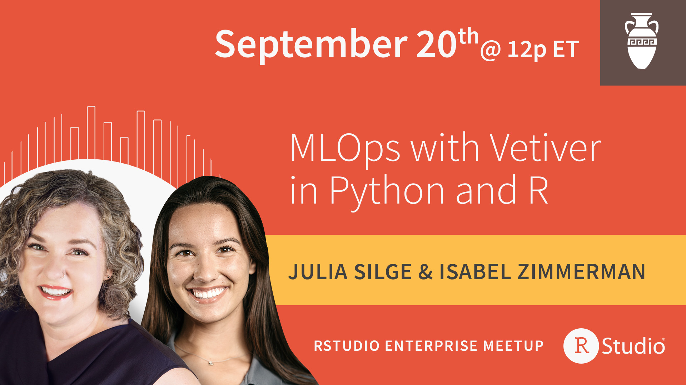

Get started with MLOps and vetiver at the RStudio Enterprise Meetup

Many data scientists understand what goes into training a machine learning model, but creating a strategy to deploy and maintain that model can be daunting. In this meetup, learn what MLOps is, what principles can be used to create a practical MLOps strategy, and what kinds of tasks and components are involved. See how to get started with vetiver, a framework for MLOps tasks in R and Python that provides fluent tooling to version, deploy, and monitor your models.
Slides
View slides in new window Download PDF of all slides
Speaker bios
Julia Silge is a software engineer at RStudio focusing on open source MLOps tools, as well as an author and international keynote speaker. Julia loves making beautiful charts, Jane Austen, and her two cats.
Isabel Zimmerman is also a software engineer on the open source team at RStudio, where she works on building MLOps frameworks. When she’s not geeking out over new data science techniques, she can be found hanging out with her dog or watching Marvel movies.